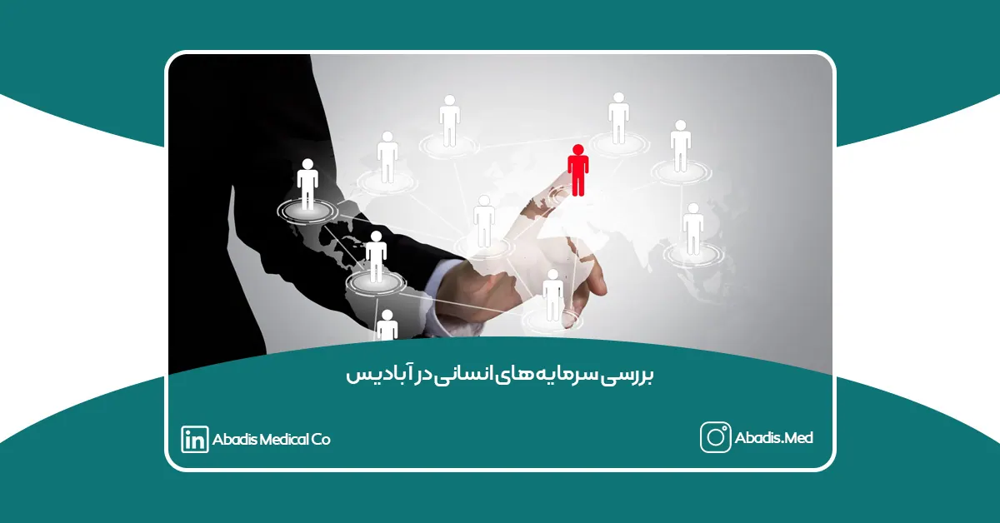
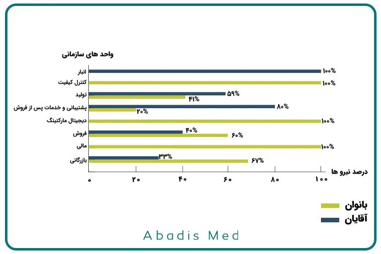
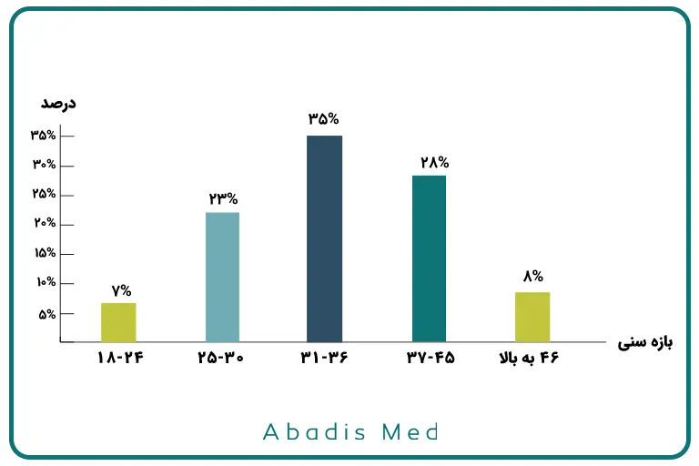
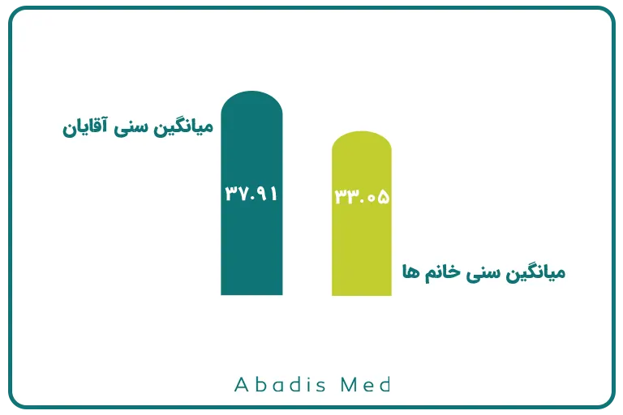
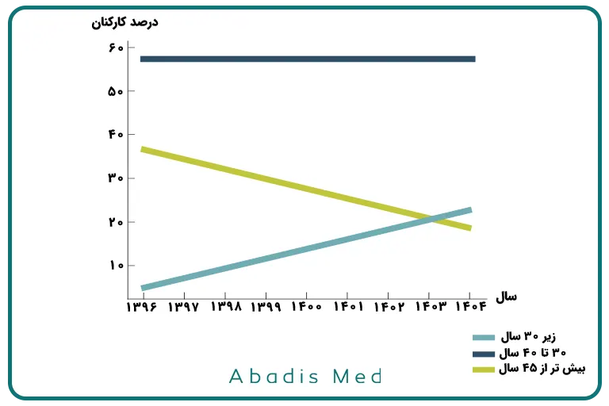
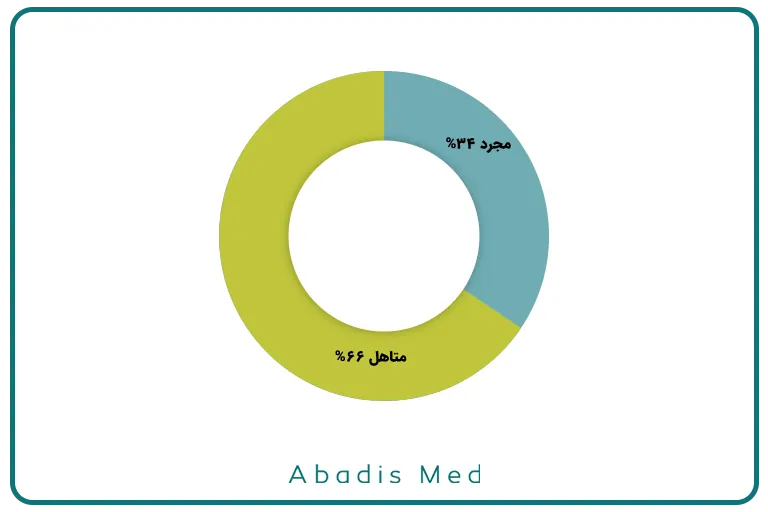

در شرکت دانشبنیان مخازن طبی آبادیس، نگاه نو، جوانگرایی و چابکی سازمانی بخشی جداییناپذیر از فرهنگ کاری محسوب میشود. هیئت مدیره این مجموعه با تأکید بر شایستهسالاری، دو رویکرد کلیدی را بهعنوان محور توسعه منابع انسانی در سال 1399 برگزید:
۱. استفاده از نیروهای جوان و مستعد برای تزریق انرژی و نوآوری در تمامی سطوح کاری.
۲. حمایت از حضور بانوان متخصص در نقشهای کلیدی سازمانی.
این نگاه باعث شده آبادیس نه تنها در عرصه فناوری تجهیزات پزشکی، بلکه در توسعه سرمایه انسانی نیز الگوی موفقی از مدیریت نوین و دادهمحور ارائه دهد.
ترکیب جنسیتی نیروی انسانی
در حال حاضر، ۴4٪ از نیروهای شاغل در آبادیس را بانوان و ۵6٪ را آقایان تشکیل میدهند. این توازن نشان میدهد که شرکت به شکلی مؤثر توانسته میان تخصص، فرصت برابر و تنوع جنسیتی تعادل ایجاد کند؛ رویکردی که در بسیاری از سازمانهای صنعتی هنوز نادر است.
ترکیب جنسیتی بر اساس واحدهای سازمانی
بررسی دادههای سال ۱۴۰۴ نشان میدهد توزیع نیروی انسانی در واحدهای کاری مختلف به شکل زیر است:

این آمار نشان میدهد که آبادیس نه تنها در واحدهای ستادی بلکه در خطوط تولید نیز فرصت برابر برای بانوان ایجاد کرده است.
توزیع سنی کارکنان
بر اساس دادههای منابع انسانی، ترکیب سنی کارکنان به شرح زیر است:
• بازه سنی ۱۸ تا ۲۴ سال: ۷٪ از نیروها
• بازه سنی ۲۵ تا ۳۰ سال: ۲۳٪ از نیروها
• بازه سنی ۳۱ تا ۳۶ سال: ۳۵٪ از نیروها
• بازه سنی ۳۷ تا ۴۵ سال: ۲۸٪ از نیروها
• بازه سنی ۴۶ سال و بالاتر: ۸٪ از نیروها

این ترکیب نشان میدهد میانگین سنی نیروی انسانی در آبادیس 35.7 سال می باشد. بازهای که ترکیب تجربه و انرژی جوانی را به بهترین شکل نشان میدهد.

میانگین سنی سهامداران و هیئتمدیره
میانگین سنی سهامداران شرکت ۴۶٫۸ سال و میانگین سنی اعضای هیئتمدیره ۳۹ سال است.
این ترکیب، تلفیقی از تجربه مدیریتی نسلهای باسابقه و نگاه نوآور نسل جوانتر را به نمایش میگذارد؛ عاملی که نقش مهمی در پایداری و ثبات استراتژیک شرکت ایفا میکند.
تحلیل روند سنی کارکنان از سال ۱۳۹۶ تا ۱۴۰۴
بررسی دادههای تاریخی منابع انسانی شرکت از سال ۱۳۹۶ تا ۱۴۰۴، بیانگر یک تحول ساختاری پایدار در ترکیب سنی و تعداد نیروهاست. تعداد پرسنل از 4 نفر در سال ۱۳۹۶ به 67 نفر در سال ۱۴۰۴ رسیده است که معادل رشد 1575 درصدی در بازهی هشتساله است.
میانگین سنی کارکنان در سال ۱۳۹۶ حدود 45 سال بوده، در حالی که در سال ۱۴۰۴ به ۳۶٫۵ سال کاهش یافته است. این تغییر نشاندهندهی جوانتر شدن ساختار نیروی انسانی و جذب نیروهای متخصص تازهنفس در مسیر توسعه فناوری است.
روند تحلیلی نشان میدهد:
- سهم نیروهای زیر ۳۰ سال از ۵٪ در سال ۱۳۹۶ به ۲۳٪ در سال ۱۴۰۴ افزایش یافته است،
- سهم نیروهای ۳۰ تا ۴۰ سال حدود ۵۸٪ باقی مانده است،
- سهم نیروهای بیش از ۴۵ سال از ۳۷٪ به ۱۹٪ کاهش یافته است.
این دادهها گویای آن است که سیاستهای منابع انسانی آبادیس بر پایه توسعه پایدار، جانشینپروری و انتقال تجربه تنظیم شده است؛ به گونهای که جوانگرایی با حفظ دانش مدیریتی همراه باشد.

وضعیت تأهل کارکنان شرکت آبادیس
تحلیل دادههای منابع انسانی شرکت نشان میدهد که حدود ۶۶ درصد از کارکنان شرکت مخازن طبی آبادیس متأهل و ۳۴ درصد مجرد هستند. این شاخص نشاندهندهی ثبات نسبی شغلی و اجتماعی در ترکیب نیروی انسانی شرکت است. مدیریت آبادیس با در نظر گرفتن شرایط خانوادگی کارکنان، تلاش دارد در سیاستهای رفاهی و برنامههای انگیزشی خود تعادل میان مسئولیتهای شغلی و خانوادگی را حفظ کند. همچنین، این ترکیب جمعیتی زمینهساز افزایش احساس تعلق و مسئولیتپذیری در محیط کار شده است.

آموزشها و توسعه مهارتهای کارکنان در آبادیس
شرکت دانشبنیان مخازن طبی آبادیس با رویکرد توسعه سرمایه انسانی و ارتقای مهارتهای کارکنان، طی سالهای اخیر برنامههای آموزشی گستردهای را در واحدهای مختلف خود اجرا کرده است. این آموزشها شامل موارد زیر بوده است:
-
ایزو ۱۳۴۸۵: آموزش و استقرار صحیح در همه واحدها.
-
مهارتهای اداری: آموزش مکاتبات اداری در واحدهای مالی و اداری.
-
تحلیل داده و اکسل پیشرفته: آموزش تحلیل داده محور و اکسل پیشرفته برای تمامی واحدها.
-
مدیریت عملکرد: آموزش OKR و KPI برای واحد فروش و بازرگانی و استقرار شاخصهای کلیدی عملکرد در تمامی واحدها.
-
واحد تولیدی و کنترل کیفیت: آموزش قالبهای تزریق پلاستیک، SPC، دوره SEM، تعمیرات و نگهداری پیشرفته، و شبیهسازی تزریق پلاستیک با نرمافزار INVENTER.
-
واحد مدیریت و سازمان: آموزش ساختار و فرهنگ سازمانی.
-
واحد فروش و بازاریابی: آموزش دوره فروش پیشرفته و بازاریابی در لینکدین.
این برنامههای آموزشی با هدف افزایش بهرهوری، بهبود کیفیت عملکرد و توسعه مهارتهای تخصصی کارکنان اجرا شده و نقش مهمی در رشد سازمان و تحقق اهداف استراتژیک شرکت ایفا میکند.
برنامههای آینده واحد منابع انسانی در آبادیس
واحد منابع انسانی شرکت دانشبنیان مخازن طبی آبادیس با تمرکز بر ارتقای مهارتها و رفاه کارکنان، برنامههای آینده خود را بر سه محور اصلی طراحی کرده است:
- آموزش مهارتهای نرم و توسعه فردی برای تقویت توانمندیهای حرفهای و ارتباطی کارکنان.
- افزایش درآمد کارکنان مبتنی بر عملکرد و شاخصهای کلیدی هر موقعیت شغلی.
- برنامهریزی برای ارتقای رفاه کارکنان با توجه به شرایط اقتصادی نا مساعد.
این اقدامات با هدف ایجاد محیط کاری پویا، انگیزشی و پایدار، نقش مهمی در حفظ نیروی انسانی متخصص و افزایش بهرهوری سازمان ایفا میکنند.
جمعبندیساختار منابع انسانی شرکت مخازن طبی آبادیس، نمونهای از مدیریت نوآور و دادهمحور منابع انسانی در یک شرکت دانشبنیان ایرانی است.
ترکیب متعادل نیروی جوان، حضور پررنگ بانوان، کاهش میانگین سنی در کنار رشد تعداد نیروها و استقرار سیستمهای BI در مدیریت منابع انسانی، نشان میدهد آبادیس نه تنها در تولید محصولات فناورانه پیشرو است، بلکه در توسعه سرمایه انسانی نیز الگویی الهامبخش از چابکی، شایستهسالاری و نگاه پایدار به آینده ارائه داده است.